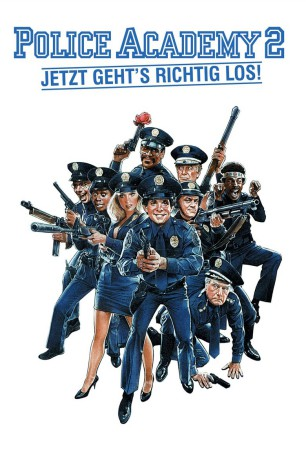

#7321 Police Academy 2 - Jetzt geht's erst richtig los
Alternativ: Police Academy 2: Their First Assignment
 
 IMDB-Wertung: 5.7 / 10
IMDB-Wertung: 5.7 / 10  Metascore: 0
Metascore: 0 
Volle Deckung! Sie sind wieder da! Mahoney, Kommandant Lassard und der beknackte Rest des chaotischsten Haufens, der jemals in einer Polizei-Uniform gesteckt hat. Kaum haben sie ihr Abschlußdiplom erhalten, werden sie auch schon auf die Menschheit losgelassen. Ihr erster Einsatz führt sie ins finsterste Viertel der Stadt. Klar, daß sie statt ordentlich aufzuräumen, das Chaos erst perfekt machen.
Jahr: 1985
Dauer: 87 Minuten
FSK: 12
Land: USA Studio: Warner Bros A Warner Communications CompanyTonspuren:
Untertitel:
Auflösung: 720p (1280x720) Größe: 2744 MB
Genre: Komödie
Regisseur:  Jerry Paris, James Signorelli
Jerry Paris, James Signorelli
Drehbuch: Neal Israel
Soundtrack:
Darsteller:
Datei: X:\7+mehr(A-Z)\Police Academy\Police Academy 2 - Jetzt geht's erst richtig los (1985, FSK12, 1280x720).mkv seit 16.10.2017
Festplatte: HD Collection-7+mehr(A-Z)+Person
 Es gibt insgesamt 10 Filme in der Gruppe '7+mehr(A-Z)\Police Academy'
Es gibt insgesamt 10 Filme in der Gruppe '7+mehr(A-Z)\Police Academy'